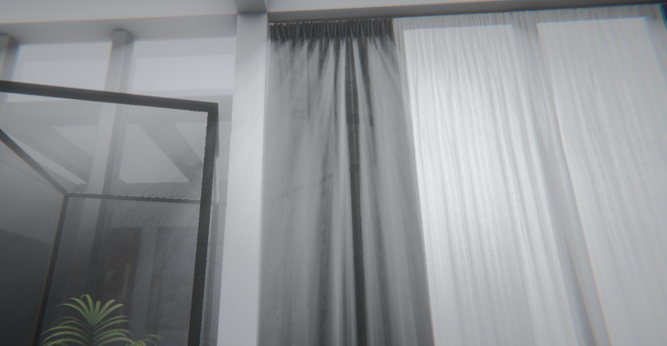
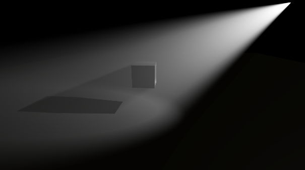
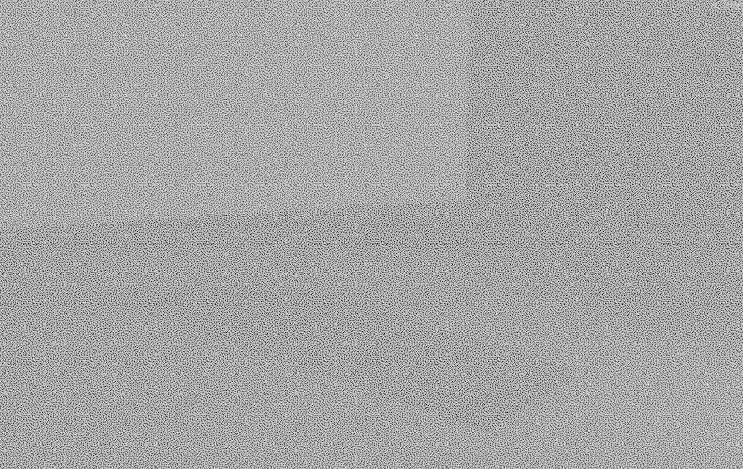
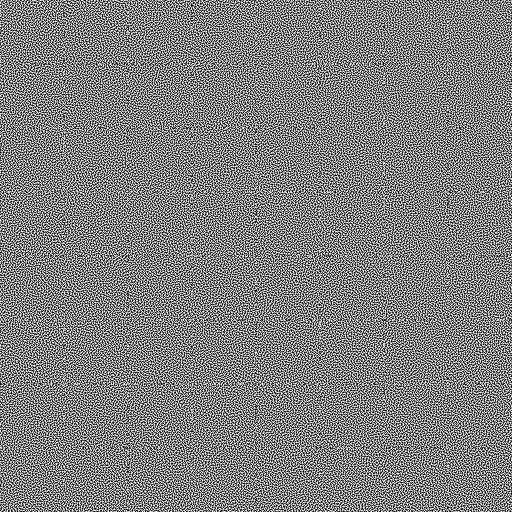
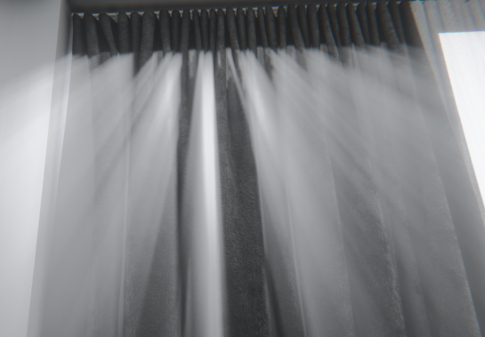
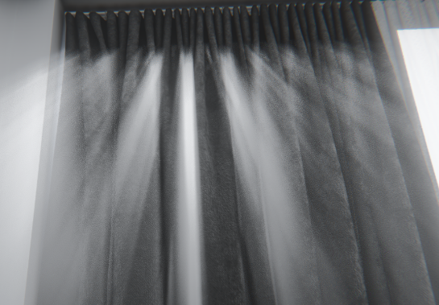

URP体积光
前述
又造一个轮子，为了庆祝URP终于出了TAA，撸一个简单体积光来庆祝一下。
就最最基础的用光线步进，采样阴影贴图。稍微抖动一下搭配TAA。
还是有一些URP的坑在里面的。简单记录一下，以备将来查验。


项目地址，直接PackageManager导入Git仓库就行
Renderer Feature
因为不打算再写一个RenderFeature了，直接用现成的Full Screen Pass Renderer Feature，所以就按照这个Pass要求的Shader的写法，要写两个Pass
- DrawProcedural
- Blit
这里就是第一个坑。如果只写一个Pass，在编辑器是没问题的，打包出来就失效，还不报错。。。
Shader
顶点
可以直接用vertexID来计算位置。这个VERTEXID_SEMANTIC语义还挺少见的。
Varyings vert(Attributes IN)
{
Varyings output;
output.positionCS = GetFullScreenTriangleVertexPosition(IN.vertexID);
output.texCoord0 = output.positionCS.xy * 0.5 + 0.5;
#if UNITY_UV_STARTS_AT_TOP
output.texCoord0.y = 1 - output.texCoord0.y;
#endif
return output;
}
记得考虑到DX与OpenGL的区别。
片元
首先是依据深度图重建世界坐标，用这个坐标作为步进的终点。
#if UNITY_REVERSED_Z
real depth = SampleSceneDepth(IN.texCoord0);
#else
real depth = lerp(UNITY_NEAR_CLIP_VALUE, 1, SampleSceneDepth(IN.texCoord0));
#endif
float3 worldPos = ComputeWorldSpacePosition(IN.texCoord0, depth, UNITY_MATRIX_I_VP);
这里考虑一下米氏散射。即光线散射的方向和光线的照射方向有关。
步进前的准备
float3 rayOrigin = _WorldSpaceCameraPos;
float numSteps = 30;
float3 ray = worldPos - rayOrigin;
float3 rayDir = (worldPos - rayOrigin) / numSteps;
float n = length(rayDir);
float density = 0;
float cosAngle = dot(-_MainLightPosition.xyz, normalize(ray));
起点是相机位置，采样的位置是从起点到终点均匀的30个点。
for (int i = 1; i < numSteps; i++)
{
float3 pos = rayOrigin + rayDir * (i + noise(IN.texCoord0*i+_Time.xy));
float4 shadowCoord = TransformWorldToShadowCoord(pos);
float light = MainLightRealtimeShadow(shadowCoord);
light *= MieScattering2(cosAngle, _MieK);
light *= n;
density += light;
}这里针对采样点做了前后的偏移抖动，保证从侧面看体积光的分界线分明。搭配TAA效果还可以。
然后就是采样阴影，计算米氏散射系数，
density = 1 - exp(-density);
density *= _scale;
return half4(density, density, density, 1.0);最后依据强度取对数并乘以系数就完活。
聚光灯/点光源
平行光用整个屏幕步进，聚光灯与点光源就没必要全屏了，还可以通过AABB来剔除。
Mesh
点光源的网格很简单，Blender弄个棱角球等比放大即可。
聚光灯就实时根据角度和高度去生成两个锥体包裹起来。
private Vector3[] GetVertices()
{
var vertices = new Vector3[num + 2];
float halfAngle = Light.spotAngle * 0.5f * Mathf.Deg2Rad;
float qAngle = halfAngle * 0.5f;
float r = Light.range / Mathf.Cos(qAngle);
float h = r * Mathf.Cos(halfAngle);
float v = Mathf.Sin(halfAngle) * r;
v /= Mathf.Cos(Mathf.PI * 2 / (num * 2));
vertices[0] = Vector3.zero;
for (int i = 0; i < num; i++)
{
vertices[i + 1] = new Vector3(Mathf.Cos(i * Mathf.PI * 2 / num) * v,
Mathf.Sin(i * Mathf.PI * 2 / num) * v, h);
}
vertices[num + 1] = new Vector3(0, 0, r);
return vertices;
}
private void AddTriangle(ref int[] triangles, ref int index, int a, int b, int c)
{
triangles[index++] = a;
triangles[index++] = b;
triangles[index++] = c;
}
private int[] GetTriangles()
{
var triangles = new int[num * 2 * 3];
int index = 0;
for (int i = 0; i < num; i++)
{
AddTriangle(ref triangles, ref index, num + 1, i + 1, (i + 1) % num + 1);
AddTriangle(ref triangles, ref index, 0, (i + 1) % num + 1, i + 1);
}
return triangles;
}
Shader
和平行光类似，但步进的起点与终点可以手动计算，计算得出射线与光照范围的交点，再根据相机与场景深度是否在范围内，可以缩小光线步进的距离。
Sphere sphere;
sphere.origin = lightPositionWS.xyz;
sphere.r = _Range;
Line viewLine;
viewLine.origin = _WorldSpaceCameraPos;
viewLine.direction = normalize(ray);
#ifdef _POINT_LIGHT
float3 nearPoint;
float3 farPoint;
float num = LineToSpherePoint(viewLine, sphere, nearPoint, farPoint);
clip(num - 0.5);
#else
half4 spotDirection = _AdditionalLightsSpotDir[perObjectLightIndex];
const float halfAngle = _SpotAngle * 0.5 * PI / 180;
float3 spotDir = -spotDirection.xyz;
Cone cone;
cone.C = lightPositionWS.xyz + spotDir * _Range * cos(halfAngle);
cone.H = lightPositionWS.xyz;
cone.r = _Range * tan(halfAngle) * cos(halfAngle);
Hemisphere hemisphere;
hemisphere.sphere = sphere;
hemisphere.normal = spotDir;
hemisphere.angle = halfAngle;
float3 TP1;
float3 TP2;
float num = LineToConePoint(viewLine, cone, TP1, TP2);
float3 P1;
float3 P2;
float num2 = LineToHemispherePoint(viewLine, hemisphere, P1, P2);
float sumNum = num + num2;
clip(sumNum - 0.5);
float3 nearPoint = TP1 + P1;
float3 farPoint = TP2 + P2;
#endif如果是点光源就简单一点，计算视线与球体的交点即可。
聚光灯复杂一点，要算视线与锥体侧边的交点，以及视线与一球冠（圆台）的交点。
关于直线（射线）与各种三维曲面的交点，有时间单独记录在一篇文章吧。
附加光索引
这里还有一点比较麻烦的是获取指定灯光的索引。
untiy并没有提供官方的API。但从RenderPass的renderingData.lightData.visibleLights;中可以得到一个列表。
这个列表的索引和实际索引顺序相同，只是前面要剔除平行光。
所以最后还是没能逃过写RenderFeature。
Render Feature
这里就不赘述了，借鉴了SRP的炫光的写法，为每个要添加体积光的Light添加一个PointVolumeLight或者SpotVolumeLight。
用一静态列表来记录需要渲染的体积光。
public abstract class BaseVolumeLight : MonoBehaviour
{
public static readonly List<BaseVolumeLight> BaseVolumeLightList = new();
protected virtual void OnEnable()
{
Light = GetComponent<Light>();
if (Light == null)
{
Debug.LogError("Light is null, please add a light component");
return;
}
if (!LightTypeIsSupported())
{
Debug.LogError("Light type is not supported");
return;
}
material = CoreUtils.CreateEngineMaterial(Shader.Find(shaderName));
GenMesh();
BaseVolumeLightList.Add(this);
}
private void OnDisable()
{
BaseVolumeLightList.Remove(this);
DestroyImmediate(material);
material = null;
}
}
这样就能在pass中获取到要渲染的对象了。
public class SpotVolumeRenderPass : ScriptableRenderPass
{
private readonly ProfilingSampler m_ProfilingSampler = ProfilingSampler.Get(VolumeRenderFeature.ProfileId.SpotVolume);
public Mesh defaultMesh { get; set; }
public override void Execute(ScriptableRenderContext context, ref RenderingData renderingData)
{
var cmd = CommandBufferPool.Get();
using (new ProfilingScope(cmd, m_ProfilingSampler))
{
var volumeLights = BaseVolumeLight.BaseVolumeLightList;
foreach (var volumeLight in volumeLights)
{
var visibleLights = renderingData.lightData.visibleLights;
var lightIndex = -1;
for (int i = 0; i < visibleLights.Length; i++)
{
if (visibleLights[i].light == volumeLight.Light)
{
lightIndex = i - 1;
}
}
if(lightIndex == -1 || volumeLight.intensity <= float.Epsilon) continue;
volumeLight.lightIndex = lightIndex;
volumeLight.UpdateIfNeed();
var mesh = volumeLight.mesh? volumeLight.mesh : defaultMesh;
cmd.DrawMesh(mesh, volumeLight.matrix, volumeLight.material);
}
}
context.ExecuteCommandBuffer(cmd);
CommandBufferPool.Release(cmd);
}
public void Dispose()
{
}
}写都写了，把平行光也做成一个pass吧。
public class DirectionalVolumeRenderPass : ScriptableRenderPass
{
private readonly ProfilingSampler m_ProfilingSampler = ProfilingSampler.Get(VolumeRenderFeature.ProfileId.DirectionalVolume);
private static readonly int Intensity = Shader.PropertyToID("_Intensity");
private static readonly int MieK = Shader.PropertyToID("_MieK");
private VolumetricLighting m_VolumetricLighting;
private Material m_Material;
public override void Execute(ScriptableRenderContext context, ref RenderingData renderingData)
{
if (m_Material == null)
{
Debug.LogErrorFormat(
"{0}.Execute(): Missing material. DirectionalVolumeRenderPass pass will not execute. Check for missing reference in the renderer resources.",
GetType().Name);
return;
}
var stack = VolumeManager.instance.stack;
m_VolumetricLighting = stack.GetComponent<VolumetricLighting>();
if (!m_VolumetricLighting.IsActive())
return;
m_Material.SetFloat(Intensity, m_VolumetricLighting.intensity.value);
m_Material.SetFloat(MieK, m_VolumetricLighting.mieK.value);
var cmd = CommandBufferPool.Get();
using (new ProfilingScope(cmd, m_ProfilingSampler))
{
CoreUtils.DrawFullScreen(cmd, m_Material);
}
context.ExecuteCommandBuffer(cmd);
CommandBufferPool.Release(cmd);
}
public bool Setup(Material material)
{
m_Material = material;
return true;
}
public void Dispose()
{
}
}
这里顺便用了VolumeComponent，方便在场景中调整全局平行体积光的效果。
优化与改进
Blue Noise
之前抖动步进距离是采用的一般的shader内的随机数，但还是有一种更好更适合光线步进的噪声，BlueNoise。
具体这东西有多神奇请移步BlueNoise。
可惜的是这没办法实时单帧内在GPU生成，只能预先生成然后采样，好消息是仅需64*64分辨率平铺，肉眼也很难发现重复结构，我觉得这才是BlueNoise最最神奇的地方，而且也基本发现不了有什么突出的结构。

为了搭配TAA，有两种方式，一是随时间随机抖动整体偏移一张噪声图，二是用TextureArray，随时间随机采样不同的噪声图。好在噪声图不大，即使放上64张，一共也才512512。
为了方便使用，下面打包了一张512512的包含了64张64*64的噪声图，可以方便在Untiy中直接生成TextureArray，图片来源图片来源

只能说这个噪声太神奇了，原先平行光需要采样15次的效果，搭配TAA仅需4次。射灯原先10次采样，现在仅需3次就能有不错的效果。


可控性
其实在日常中，很少能发现体积光的现象，一般只有在山洞，森林等光线单一且潮湿的地方才有。
但这种效果却在游戏中经常运用。
会过来看Shader，发现其实这里也没有多么“物理”，比如平行光就没有计算衰减，最后的归一化函数也是基于经验。
所以调整一下最后的归一化函数，增加几个系数，便于调整美术效果。
- 均匀度：调整步进总量光线强度与实际显示亮度的关系
- 最大强度：便于调整整体的颜色和强度
- 距离衰减系数：是否考虑距离或角度的衰减
- 阴影反向衰减强度：阴影不仅不计入光线总量，反而会反向衰减现有的光线总量，会加深阴影的表现，但“不物理”。
升降采样与模糊
算最常见的优化方案了，确实体积光也没必要全分辨率渲染，而且模糊后再搭配TAA效果应该也不错，边缘也不会那么锐利。
这就单独再开一篇文章记录吧，打算在URP中用RenderFeature和Volume框架复刻毛星云大佬的那个模糊后处理的库。